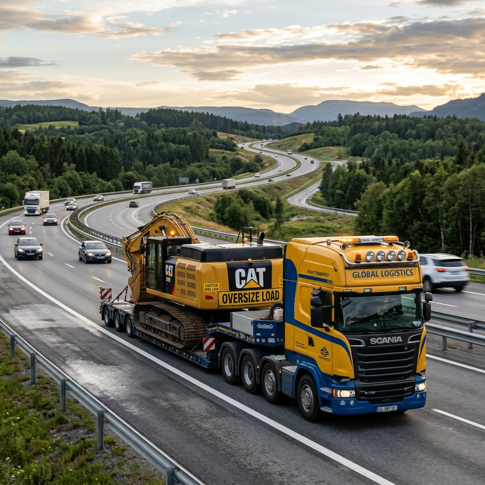
Transporte MATPEL
Soluciones logísticas para el transporte de carga pesada, combustibles y materiales peligrosos (MATPEL) en la ruta Trujillo-Pataz y a nivel nacional.
+0 Años
De Experiencia
+0 Obras
Proyectos Exitosos
+0%
Personal Calificado
Inversiones y Representaciones J&F Hrnos S.A.C. es una empresa contratista con personal calificado y disciplinado que brinda ejecución de ingeniería y proyectos civiles. Nos especializamos en obras de infraestructura minera, metalmecánica, instalaciones eléctricas industriales e interior mina en la provincia de Pataz.
Ofrecemos servicios integrales como mantenimiento de carreteras, alquiler de maquinaria pesada (línea amarilla y volquetes) y transporte logístico de carga pesada, combustibles y materiales peligrosos (MATPEL). Contamos con amplia experiencia ejecutando trabajos continuos para el sector minero y entidades públicas del Estado peruano.
Disponemos de un taller metalmecánico en Llacuabamba (Parcoy) equipado con tornos, cortadora de plasma, equipos de soldadura y roladoras para desempeñar eficazmente trabajos de calderería, montaje y construcciones metálicas en campo.
Nuestra Misión
Satisfacer las necesidades de nuestros clientes brindando un servicio de ingeniería de calidad, empleando mano de obra calificada y maquinaria moderna, respetando las normas de seguridad y medio ambiente.
Nuestra Visión
Posicionarnos a nivel regional como una gran empresa de construcciones metálicas, eléctrica industrial y obras civiles, a la vanguardia tecnológica y con constante capacitación de nuestro grupo humano.

Soluciones logísticas para el transporte de carga pesada, combustibles y materiales peligrosos (MATPEL) en la ruta Trujillo-Pataz y a nivel nacional.
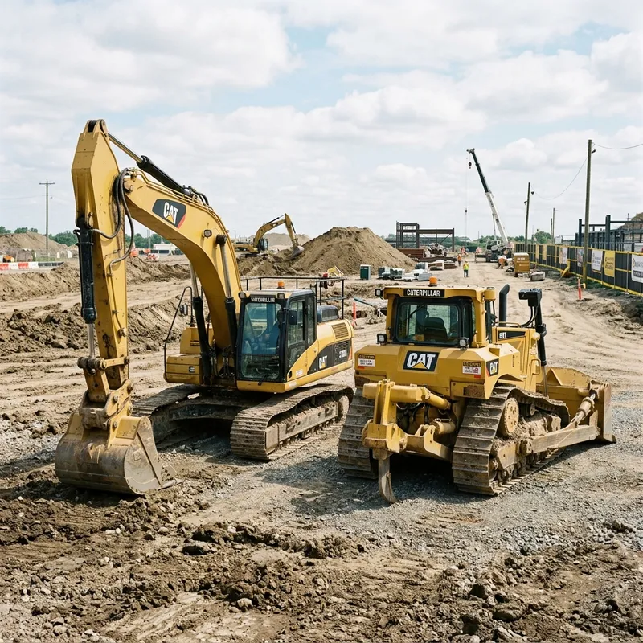
Alquiler de maquinaria pesada en Pataz y La Libertad con flota propia: Excavadoras (Volvo/Cat), Volquetes Volvo FMX, Carmix y Motoniveladoras.
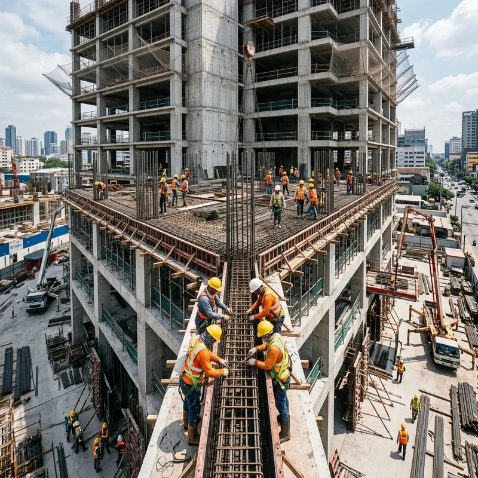
Ejecución integral de obras civiles, campamentos mineros, muros de contención y montajes mecánicos de tanques y naves estructurales.
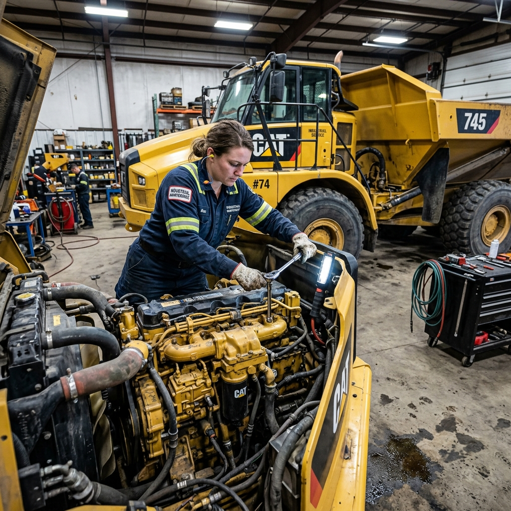
Soporte preventivo y operativo, mantenimiento de carreteras, perfilado de rasante y remediación ambiental con base en Llacuabamba.
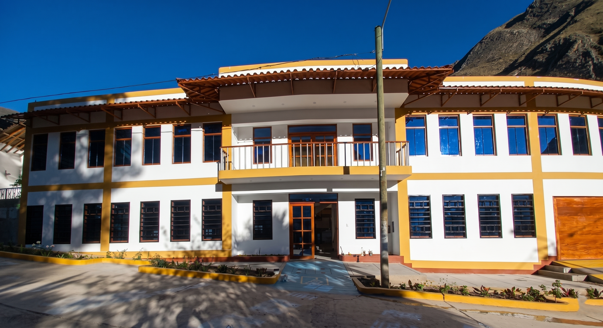
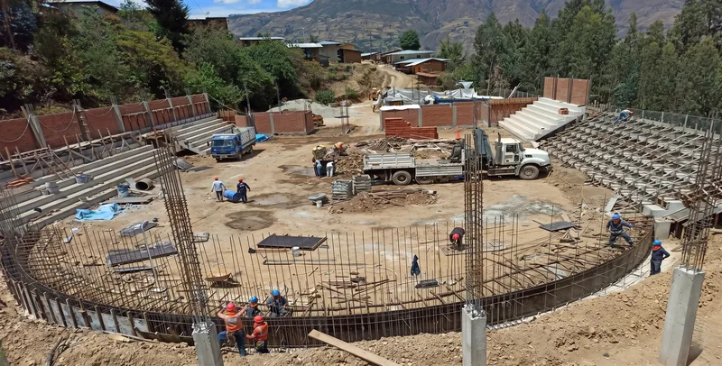
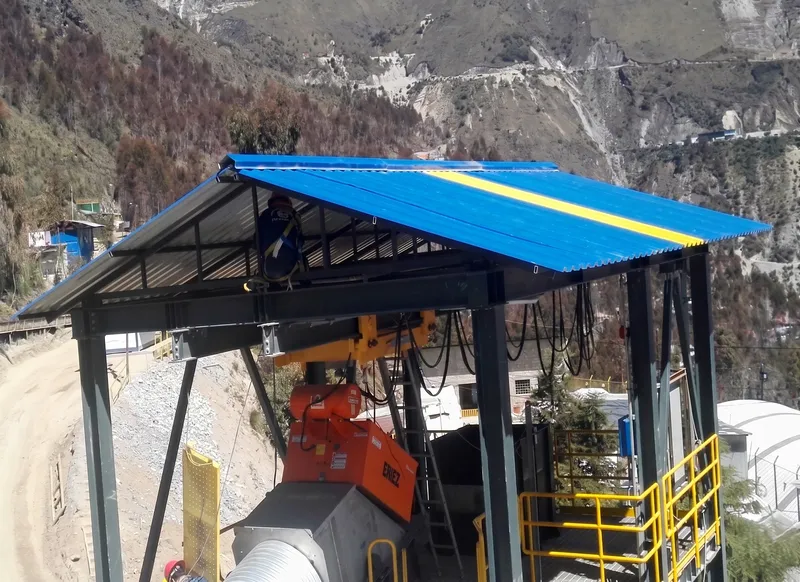
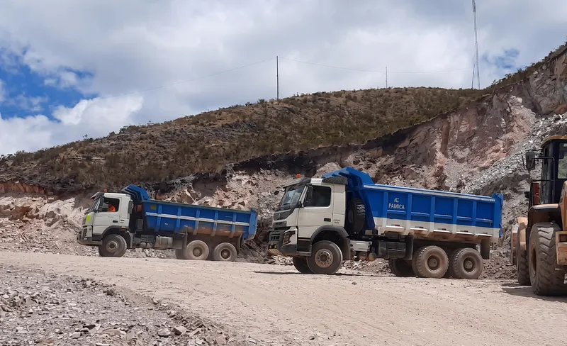
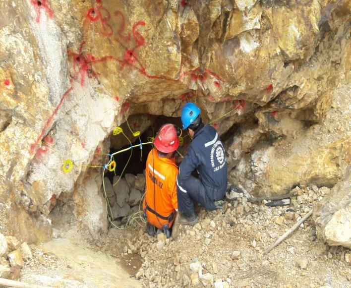
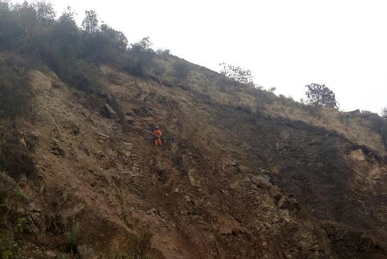
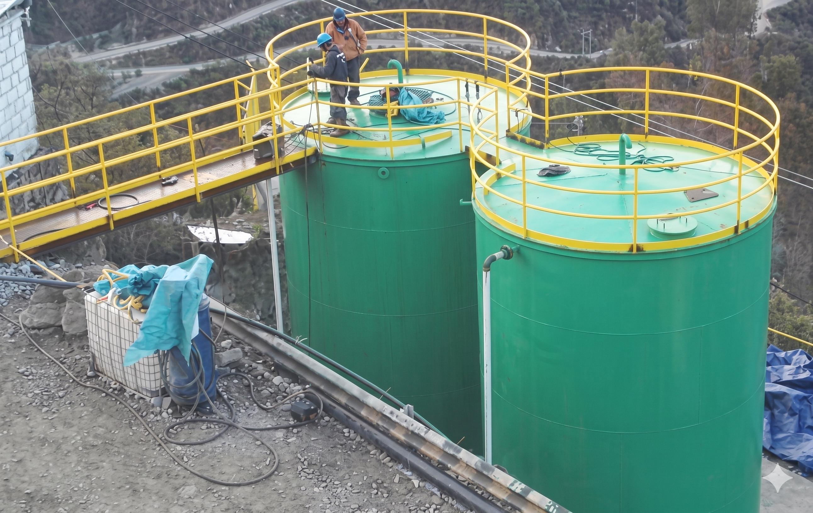
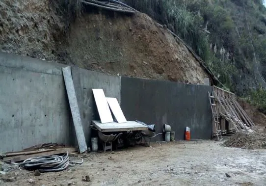
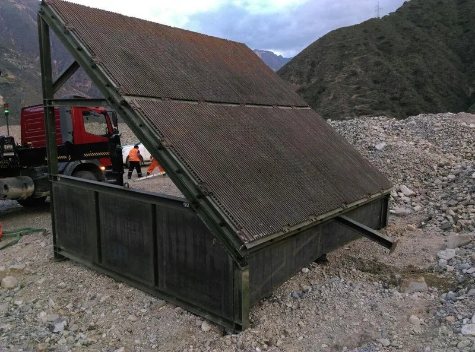
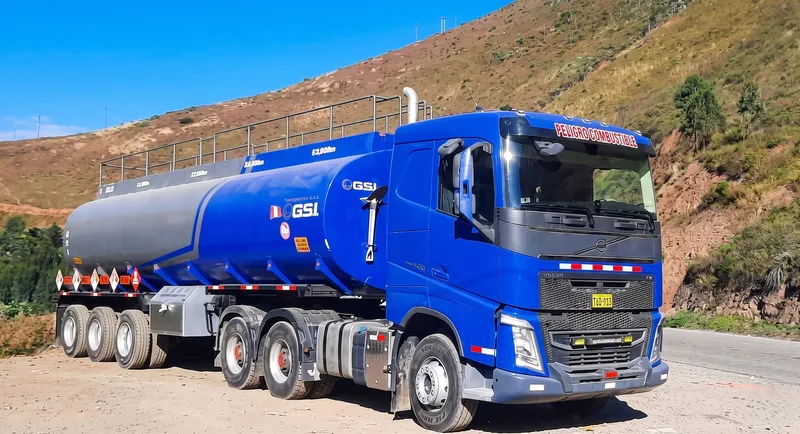
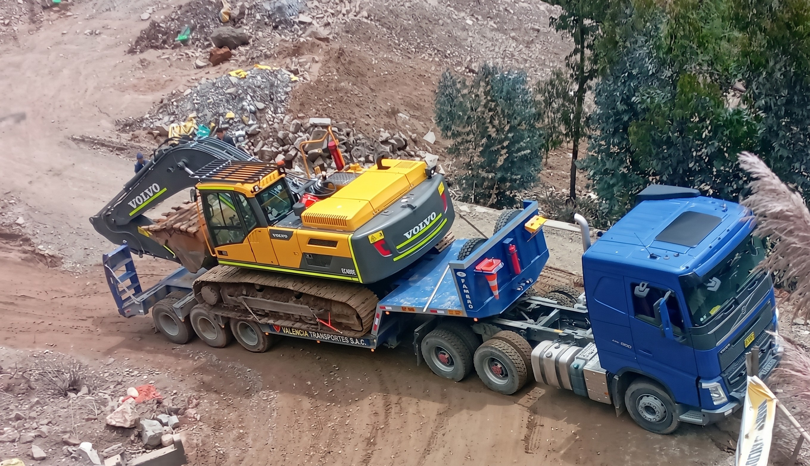
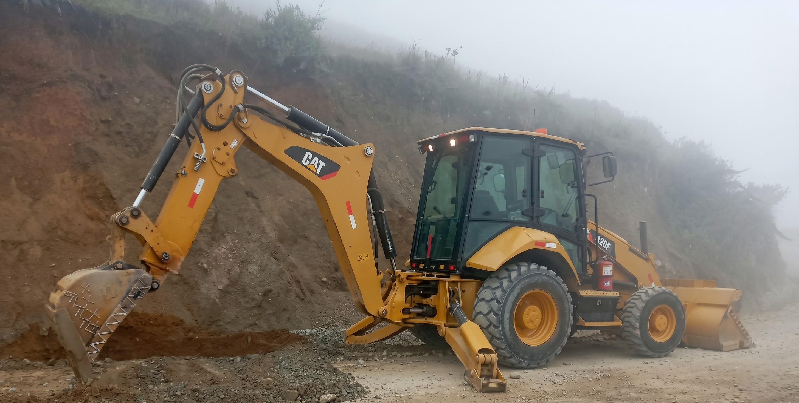
Ofrecemos soluciones integrales en ingeniería civil, construcción de obras públicas y privadas, estructuras metálicas, mantenimiento vial, alquiler de maquinaria pesada y transporte logístico de materiales peligrosos (MATPEL) a nivel nacional.
Tenemos nuestra base operativa y taller principal en Llacuabamba (La Libertad), pero brindamos servicios logísticos y ejecutamos obras de ingeniería en todo el territorio nacional, con especial presencia en las zonas mineras del norte y centro del país.
Sí, contamos con todos los permisos vigentes otorgados por el Ministerio de Transportes y Comunicaciones (MTC) para el transporte terrestre de materiales peligrosos, pólizas de seguro de responsabilidad civil vigentes y conductores homologados con categoría especial A-IV.
Disponemos de una flota moderna y propia que incluye excavadoras hidráulicas Volvo y Caterpillar, rodillos compactadores, rodillos de asfalto, cargadores frontales, volquetes Volvo FMX, motoniveladoras y mezcladoras autocargables (Carmix), garantizando alta disponibilidad mecánica.
© 2026 Inversiones y Representaciones J & F Hrnos S.A.C. Todos los derechos reservados.